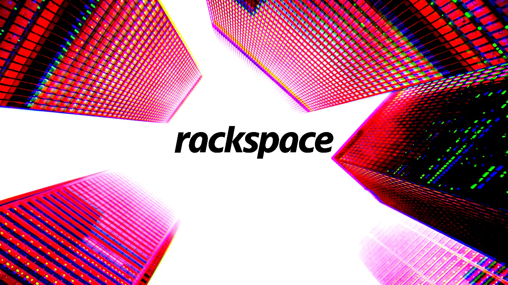

Rackspace уведомила пострадавших клиентов, что несанкционированный доступ к частям платформы Rackspace Spot был получен 17 ноября 2026 года примерно с 00:20 до 22:00 UTC — с помощью утёкших учётных данных. О самом вторжении компания узнала только 18 ноября, когда ей сообщил об этом один из клиентов, и в тот же день подтвердила: организация заявителя пострадала.
Главная опасность в том, что захваченные учётные данные позволяли действовать как легальный пользователь внутри некоторых клиентских организаций: злоумышленники создавали поды в Kubernetes-кластерах, читали Kubernetes Secrets, перечисляли ноды и тома. В Secrets по определению лежат пароли, токены аутентификации и API-ключи — то есть ключи от баз данных, облачных сервисов и смежных систем. Rackspace прямо предупредила: прочитанным мог оказаться ЛЮБОЙ секрет в кластере затронутого клиента, а также его Spot API-токены и refresh-токены.
Компания опубликовала индикаторы компрометации: IP-адрес 23.224.79.106, диапазон 23.224.0.0/15 и характерные префиксы подозрительных подов и объектов — i1, glm- и probe. Заявлено, что затронутые токены и сессии отозваны, несанкционированные поды удалены, ключи ротированы, а контроль доступа и мониторинг усилены. Сколько именно клиентов пострадало и были ли выкачаны данные — Rackspace на вопросы прессы не ответила.
Сам инцидент устроил облаку четырёхдневный аврал: административная консоль Spot лежала почти до 21 ноября. Сооснователь и руководитель развития платформы Platform9 (соразработчик Spot) Сириш Рагурам объяснил на форуме клиентов: команда сознательно отключила ВСЕ доступы и «санитизировала» окружение целиком, чтобы защитить пользователей, — ценой того, что клиенты не могли сами ротировать скомпрометированные ключи. «Мы невероятно разочарованы, что подвели вас таким образом», — признался он.
Rackspace предписала клиентам: перевыпустить Spot API-токены, заменить refresh-токены в автоматизации, скачать свежие конфигурационные файлы Kubernetes и ротировать все учётные данные, хранившиеся в Secrets кластеров. Плюс — поднять логи баз данных, контейнерных реестров, Git-репозиториев, облачных хранилищ и сторонних сервисов, начиная с 17 ноября, и искать следы использования скомпрометированных ключей.
Отдельного публичного анонса в блоге компании нет: официальное уведомление разослано клиентам и продублировано командой Platform9 в сообществе пользователей Spot — оттуда же взяты цитаты и подтверждение полного восстановления сервиса 21 ноября.
Урок для всех, кто живёт на Kubernetes-облаках, прозаич: скомпрометированный доступ у провайдера управляемого кластера — это не «проблема хостера», а мгновенный вход к вашим секретам. Регулярная ротация ключей и отдельный менеджер секретов поверх Kubernetes Secrets снова оказались гигиеной первой необходимости.